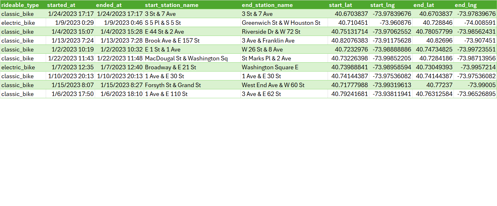

Problem statement
TIL: Hôm nay mình thử giải một challenge của bác Owen Price. Bác là Microsoft MVP, master ở khía cạnh xử lí, làm sạch, thậm chí là tối ưu việc xử lí đó trong Excel, trang blog của bác là FLEX YOUR DATA, mình học được rất nhiều cách sử dụng formulas, đặc biệt là các hàm mới từ LAMBDA(), MAP(), REDUCE() cho đến gần đây là Python in Excel, GROUPBY(), PIVOTBY, và các hàm REGEX_().
Nội dung challenge là, với một phần (1000 records) của bộ dữ liệu Citi Bike, trong đó chứa hai cột start_station_name, end_station_name, mỗi cột lại chứa thông tin các “station” ~ trạm, liệt kê 5 địa chỉ cùng số lần xuất hiện với số lượng lớn nhất!. Hình dưới là 10 dòng đầu tiên của dữ liệu.

Well l√∫c ƒë·∫ßu m√¨nh nghƒ© n√≥ c≈©ng ƒë∆°n giản üòÇ, th·∫≠m ch√≠ c≈©ng kh√¥ng hi·ªÉu t·∫°i sao m·ªói start ho·∫∑c end station l·∫°i c√≥ hai station, c√°ch nhau b·ªüi k√Ω t·ª± & (space before & after). M√¨nh l·∫≠p t·ª©c ƒë∆∞a ra l·ªùi giải nh∆∞ sau:
=LET(
_d, " & ",
_all_records, TOCOL(
BYROW(
BYROW(
_tbl_CityBike[[start_station_name]:[end_station_name]],
LAMBDA(x, TEXTJOIN(_d, TRUE, x))
),
LAMBDA(x, TEXTSPLIT(x, _d))
)
),
_stations, UNIQUE(_all_records),
_cnt, BYROW(
--(_stations = TRANSPOSE(_all_records)),
// "--" equals to "+" will convert the boolean TRUE/FALSE to value 1/0
LAMBDA(x, SUM(x))
),
TAKE(SORTBY(HSTACK(_stations, _cnt), _cnt, -1), 5, )
)Kết quả:
Đối chiếu với các kết quả của những người tham gia khách thì nó sai! Ý tưởng của mình là đầu tiên với mỗi hàng, join chúng lại với & (_d), sau đó lại split chúng ra với cùng _d đó, từ đó có được danh sách occurence của tất cả các địa chỉ. Tuy nhiên mình nhận ra dữ liệu trả về cho _all_records bị thiếu sót. Lý do là các trạm (station) thường là các giao lộ, kết hợp từ hai địa chỉ với dấu &, tuy nhiên có một số trạm lại nằm trên một con đường. Và vì chất lượng dữ liệu, cũng có một số station là null. Hàm TOCOL() là hàm mảng xử lí các mảng con nhận được từ BYROW(...,LAMBDA(...,TEXTSPLIT())), các mảng con này có độ dài không đều, dẫn đến TOCOL() chỉ take record đầu tiên của mỗi mảng con, trả về _all_records chỉ gồm 1000 dòng dữ liệu.
Solution
Các mảng lởm chởm hay ragged/jagged array là các mảng gồm các mảng con có độ dài không đều nhau. Excel không thể merge các bảng có kích cỡ không bằng nhau.
Một comment đưa mình tới hàm BLAMBDAλ() của bác MVP Peter Bartholemew và bài giải thích của Owen Price.
Và lời giải đúng, được dựa trên ý tưởng của BLAMBDAλ() là:
=LET(
B, LAMBDA(B, v,
LET(
n, ROWS(v),
IF(
n > 1,
VSTACK(B(B, TAKE(v, n / 2)), B(B, DROP(v, n / 2))),
TEXTSPLIT(TEXTJOIN(" & ", , v), , " & ")
)
)
),
str, B(B, CHOOSECOLS(_tbl_CityBike, 4, 5)),
_u_str, UNIQUE(str),
_cnt, BYROW(--(_u_str = TRANSPOSE(str)), LAMBDA(x, SUM(x))),
TAKE(SORTBY(HSTACK(_u_str, _cnt), _cnt, -1), 5)
)Nếu sử dụng GROUPBY() thì việc tính toán cuối cùng sẽ gọn hơn, tuy nhiên vào thời điểm viết bài, hàm này vẫn chưa được MS đưa lên 365 Production mà chỉ ở kênh Insider.
Kết quả cuối cùng:
BLAMBDAλ()
Nguyên văn mục đích của BLAMBDAλ() của Peter:
Recursively bisects an array and applies a function to the leaf nodes. Useful for when the result of the Fnλ(leaf) calls are not of equal length. As such, BMAPλ can produce ragged arrays.
Owen cũng nhận xét là hàm này “more computationally efficient” so với STACKER() của ổng. Chi tiết về ý tưởng hàm gốc có thể tham khảo ở các link trên, giờ mình sẽ tìm hiểu BLAMBDAλ() được áp dụng cho use case này.
Đầu tiên B() (stands for Bisected) là một hàm recursive:
B = LAMBDA(B, v,
LET(
n, ROWS(v),
IF(
n > 1,
VSTACK(B(B, TAKE(v, n / 2)), B(B, DROP(v, n / 2))),
TEXTSPLIT(TEXTJOIN(" & ", , v), , " & ")
)
)
)Trong đó:
nlà số dòng củav~ mảng cần tính toán- nếu
n> 1, trả về kết hợpVSTACK()khi hàmB()được áp dụng cho hai nửa của mảngv,TAKE()sẽ lấy “phân nửa” đầu tiên,DROP()sẽ bỏ đi phân nửa đầu tiên ~ nghĩa là lấy phân nửa thứ 2 (lưu ý rằng hai hàm này đều lấy số nguyên nhỏ hơn gần nhất củan / 2, do đó không cần lấy phần nguyên bằngQUOTIENT(n,2)như hàm gốc của Peter). - khi n = 1, nghĩa là với mỗi phần tử của mảng
v, thực hiện động tácTEXTSPLIT(TEXTJOIN(...))~ trước hết join hai cột rồi sau đó split. - hàm này đệ quy và sẽ
VSTACK()tất cả các mảng dọc sinh từ việcTEXTSPLIT()kết quả củaTEXTJOIN()hai cột trên mỗi dòng của mảngv.
M√¨nh c≈©ng th·ª≠ viết l·∫°i h√†m B(), thay ƒë·ªïi m·ªôt ch√∫t ~ thay v√¨ th·ª±c hi·ªán tr√™n 1 mảng 2 c·ªôt m√¨nh c·ªë g·∫Øng chuy·ªÉn mảng v th√†nh m·ªôt c·ªôt, tuy nhi√™n ch∆∞a th√†nh c√¥ng üò™ (ch∆∞a hi·ªÉu t·∫°i sao):
=LET(
B, LAMBDA(B, v,
LET(
n, ROWS(v),
IF(n > 1, VSTACK(B(B, TAKE(v, n / 2)), B(B, DROP(v, n / 2))), TEXTSPLIT(v, " & "))
)
),
_data, VSTACK(_tbl_CityBike[start_station_name], _tbl_CityBike[end_station_name]),
str, B(B, FILTER(_data, LEN(_data) > 0)),
_u_str, UNIQUE(str),
_cnt, BYROW(--(_u_str = TRANSPOSE(str)), LAMBDA(x, SUM(x))),
TAKE(SORTBY(HSTACK(_u_str, _cnt), _cnt, -1), 5)
)üöÄ Edit: sau khi m√†y m√≤ th√™m s·ª≠a l·ªói cho giải ph√°p tr√™n m√¨nh back to basic v·ªõi l·ªùi giải sau:
=LET(
_data, TOCOL(_tbl_CityBike[[start_station_name]:[end_station_name]], 3),
_str, DROP(REDUCE("", _data, LAMBDA(a, x, VSTACK(a, TEXTSPLIT(x, , " & ")))), 1),
_u_str, UNIQUE(_str),
_cnt, BYROW(--(_u_str = TRANSPOSE(_str)), LAMBDA(x, SUM(x))),
TAKE(SORTBY(HSTACK(_u_str, _cnt), _cnt, -1), 5)
)Tất nhiên tốc độ xử lí sẽ chậm hơn BLAMBDAλ() - O_log(n), giải pháp này duyệt qua từng phần tử, nên BigO là O(n)
Thanks Peter & Owen for this great use of recursion presented in such a concise manner.